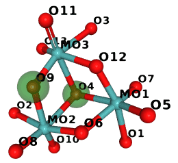
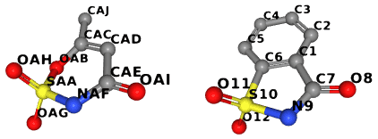
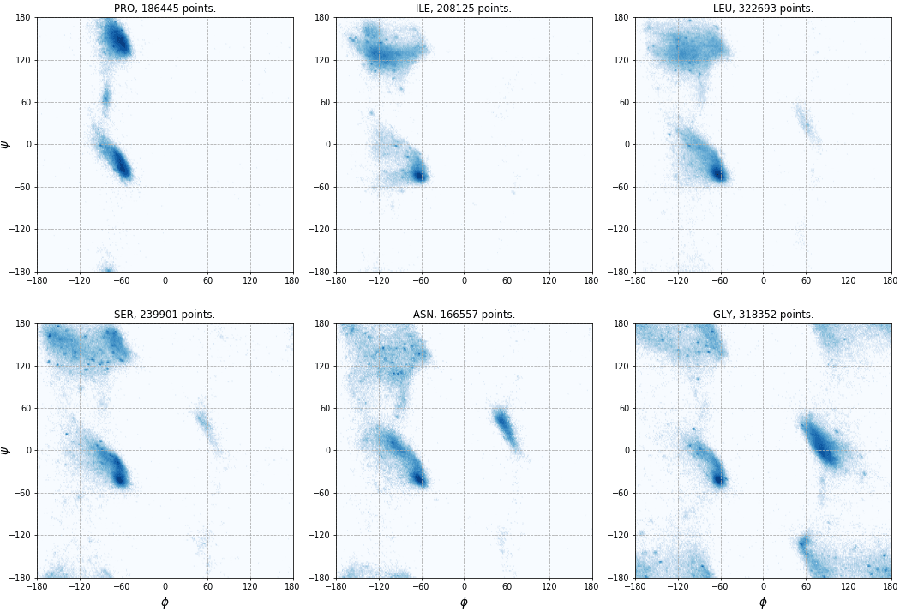

Structure analysis¶
Neighbor search¶
Fixed-radius near neighbor search is usually implemented using the cell lists method, also known as binning, bucketing, or the cell technique (or cubing – as it was called in an article from 1966). The method is simple. The unit cell (or the area where the molecules are located) is divided into small cells. The size of these cells depends on the search radius. Each cell stores a list of atoms in its area; these lists are used for fast lookup of atoms.
In Gemmi the cell technique is implemented in a class named NeighborSearch.
The implementation works with both crystal and non-crystal systems and:
handles crystallographic symmetry (including non-standard settings with origin shift that are present in a couple of hundreds of PDB entries),
handles strict NCS (MTRIX record in the PDB format that is not “given”; in mmCIF it is the _struct_ncs_oper category),
handles alternative locations (atoms from different conformers are not neighbors),
can find neighbors any number of unit cells apart; surprisingly, molecules from different and non-neighboring unit cells can be in contact, either because of the molecule’s shape (a single chain can be longer than four unit cells) or due to a poor choice of origin (some PDB entries even have links between chains more than 10 unit cells away which cannot be expressed in the 1555 notation).
Note that while an atom can be bonded with its own symmetric image, it sometimes happens that an atom meant to be on a special position is slightly off, and its symmetric images represent the same atom (so after expanding the symmetry, we may have four nearby images, each with occupancy 0.25). Such images will be returned by the NeighborSearch class as neighbors and need to be filtered out by the users.
The NeighborSearch constructor divides the unit cell into bins.
For this, it needs to know the search radius for which we optimize bins,
as well as the unit cell. Since the system may be non-periodic,
the constructor also takes the model as an argument – it is used to
calculate the bounding box for the model if there is no unit cell. The
reference to the model is stored and is also used if populate() is called.
The C++ signature (in gemmi/neighbor.hpp) of the constructor is:
NeighborSearch::NeighborSearch(Model& model, const UnitCell& cell, double radius)
The cell lists need to be populated with items either by calling:
void NeighborSearch::populate(bool include_h=true)
or by adding individual chains:
void NeighborSearch::add_chain(const Chain& chain, bool include_h=true)
or by adding individual atoms:
void NeighborSearch::add_atom(const Atom& atom, int n_ch, int n_res, int n_atom)
where n_ch is the index of the chain in the model, n_res is the index
of the residue in the chain, and n_atom is the index of the atom
in the residue.
An example in Python:
>>> import gemmi
>>> st = gemmi.read_structure('../tests/1pfe.cif.gz')
>>> ns = gemmi.NeighborSearch(st[0], st.cell, 5).populate(include_h=False)
Here we do the same using add_chain() instead of populate():
>>> ns = gemmi.NeighborSearch(st[0], st.cell, 5)
>>> for chain in st[0]:
... ns.add_chain(chain, include_h=False)
And again the same, with complete control over which atoms are included:
>>> ns = gemmi.NeighborSearch(st[0], st.cell, 5)
>>> for n_ch, chain in enumerate(st[0]):
... for n_res, res in enumerate(chain):
... for n_atom, atom in enumerate(res):
... if not atom.is_hydrogen():
... ns.add_atom(atom, n_ch, n_res, n_atom)
...
All these functions store Marks in cell-lists. A Mark contains the
position of an atom’s symmetry image and indices that point to the original
atom. Searching for neighbors returns Marks, from which we can obtain
original chains, residues, and atoms.
NeighborSearch has a couple of functions for searching. The first one takes an atom as an argument:
std::vector<Mark*> NeighborSearch::find_neighbors(const Atom& atom, float min_dist, float max_dist)
>>> ref_atom = st[0].sole_residue('A', gemmi.SeqId('3')).sole_atom('P')
>>> marks = ns.find_neighbors(ref_atom, min_dist=0.1, max_dist=3)
>>> len(marks)
6
find_neighbors() checks the atom’s altloc and only considers
atoms from the same conformation as potential neighbors.
In particular, if the altloc is empty, all atoms are considered.
A positive min_dist in the find_neighbors() call prevents
the atom whose neighbors we are searching for from being included
in the results (since the distance of an atom to itself is zero).
The second one takes the position and altloc as explicit arguments:
std::vector<Mark*> NeighborSearch::find_atoms(const Position& pos, char altloc, float min_dist, float radius)
>>> point = gemmi.Position(20, 20, 20)
>>> marks = ns.find_atoms(point, '\0', radius=3)
>>> len(marks)
7
To find only the nearest atom (regardless of altloc), use:
Mark* find_nearest_atom(const Position& pos, float radius=INFINITY)
>>> ns.find_nearest_atom(point)
<gemmi.NeighborSearch.Mark 3 of atom 0/7/9 element C>
All the above functions can search in a radius bigger than the radius passed to the NeighborSearch constructor, but it requires checking more cells (125+ instead of 27), which is usually not optimal. On the other hand, it is usually also not optimal to use big cells (radius ≫ 10Å). And very small ones (radius < 4Å) are also inefficient.
In C++ you may use a low-level function that takes a callback as an argument (usage examples are in the source code):
template<typename T>
void NeighborSearch::for_each(const Position& pos, char altloc, float radius, const T& func, int k=1)
Cell-lists contain Marks. When searching for neighbors you get references
(in C++ – pointers) to these marks.
Mark has a number of properties: x, y, z,
altloc, element, image_idx (index of the symmetry operation
that was used to generate this mark, 0 for identity),
chain_idx, residue_idx and atom_idx.
>>> mark = marks[0]
>>> mark
<gemmi.NeighborSearch.Mark 11 of atom 0/7/2 element O>
>>> mark.pos
<gemmi.Position(21.091, 18.2279, 17.841)>
>>> mark.altloc
'\x00'
>>> mark.element
gemmi.Element('O')
>>> mark.image_idx
11
>>> mark.chain_idx, mark.residue_idx, mark.atom_idx
(0, 7, 2)
The references to the original model and to atoms are not stored.
Mark has a method to_cra() that needs to be called with Model
as an argument to get a triple of Chain, Residue and Atom:
CRA NeighborSearch::Mark::to_cra(Model& model) const
>>> cra = mark.to_cra(st[0])
>>> cra.chain
<gemmi.Chain A with 79 res>
>>> cra.residue
<gemmi.Residue 8(DC) with 19 atoms>
>>> cra.atom
<gemmi.Atom OP2 at (1.4, 15.9, -17.8)>
Note that mark.pos can be the position of a symmetric image of the atom.
In this example the “original” atom is in a different location:
>>> mark.pos
<gemmi.Position(21.091, 18.2279, 17.841)>
>>> cra.atom.pos
<gemmi.Position(1.404, 15.871, -17.841)>
The symmetry operation that relates the original position and its image is composed of two parts: one of symmetry transformations in the unit cell and a shift of the unit cell that we often call here the PBC (periodic boundary conditions) shift.
The first part is stored explicitly as mark.image_idx.
The corresponding transformation is:
>>> ns.get_image_transformation(mark.image_idx)
<gemmi.FTransform object at 0x...>
>>> _.mat
<gemmi.Mat33 [1, -1, 0]
[0, -1, 0]
[0, 0, -1]>
To find the full symmetry operation we need to determine the nearest image under PBC:
>>> st.cell.find_nearest_pbc_image(point, cra.atom.pos, mark.image_idx)
<gemmi.NearestImage 12_665 in distance 3.00>
To calculate only the distance to the atom, you can use the same function
with mark.pos and symmetry operation index 0. mark.pos represents
the position of the atom after being transformed by the symmetry
operation mark.image_idx and shifted into the unit cell.
>>> st.cell.find_nearest_pbc_image(point, mark.pos, 0)
<gemmi.NearestImage 1_555 in distance 3.00>
>>> _.dist()
2.998659073040...
Caveat: the image from find_nearest_pbc_image() is the nearest in
fractional (not Cartesian) coordinates. It doesn’t matter as long
as the unit cell is much larger than the search radius.
For more information see the properties of NearestImage.
The neighbor search can also be applied to small-molecule structures. Here, we examine MgI2, with each Mg atom surrounded by 6 iodine atoms at a distance of 2.92Å:
>>> small = gemmi.read_small_structure('../tests/2013551.cif')
>>> mg_site = small.sites[0]
>>> ns = gemmi.NeighborSearch(small, 4.0).populate()
>>> for mark in ns.find_site_neighbors(mg_site, min_dist=0.1):
... site = mark.to_site(small)
... print(site.label, 'symmetry op #%d' % mark.image_idx)
I symmetry op #0
I symmetry op #0
I symmetry op #0
I symmetry op #3
I symmetry op #3
I symmetry op #3
In this case, the unit cell size is comparable to the search radius. The cif file lists two atoms under the trigonal P -3 m 1 symmetry:
Mg 0.0000 1.0000 1.0000
I 0.3333 0.6667 0.75763(6)
If we want to determine the positions of symmetry images of the iodine atom
surrounding the Mg atom, find_nearest_pbc_image() is not sufficient.
There are three different PBC images of the same mark within the search radius.
(This may happen only in tiny unit cells and is not relevant to biomolecules.)
For such cases, we have the function find_nearest_pbc_images()
that returns all images within the specified radius. Actually, this function
checks only the image returned by find_nearest_pbc_image() and adjacent unit cells
(27 positions in total), which should be enough for a radius comparable
to a bond length. Below is a continuation of the previous example that
also prints PBC translations and image positions of surrounding iodine atoms:
>>> marks = ns.find_site_neighbors(mg_site, min_dist=0.1)
>>> unique_marks = list(dict.fromkeys(marks))
>>> for mark in unique_marks:
... site = mark.to_site(small)
... print(site.label, 'symmetry op #%d' % mark.image_idx)
... fpos = small.cell.fractionalize(mark.pos)
... for im in small.cell.find_nearest_pbc_images(mg_site.fract, 4.0, fpos, 0):
... im_pos = small.cell.fract_image(im, fpos)
... print(' ->', im, im_pos)
...
I symmetry op #0
-> <gemmi.NearestImage 1_455 in distance 2.92> <gemmi.Fractional(-0.6667, 0.6667, 0.75763)>
-> <gemmi.NearestImage 1_555 in distance 2.92> <gemmi.Fractional(0.3333, 0.6667, 0.75763)>
-> <gemmi.NearestImage 1_565 in distance 2.92> <gemmi.Fractional(0.3333, 1.6667, 0.75763)>
I symmetry op #3
-> <gemmi.NearestImage 1_456 in distance 2.92> <gemmi.Fractional(-0.3333, 0.3333, 1.24237)>
-> <gemmi.NearestImage 1_466 in distance 2.92> <gemmi.Fractional(-0.3333, 1.3333, 1.24237)>
-> <gemmi.NearestImage 1_566 in distance 2.92> <gemmi.Fractional(0.6667, 1.3333, 1.24237)>
Contact search¶
Contacts in a molecule or in a crystal can be found using the neighbor search described in the previous section. However, to make it easier, we have a dedicated class ContactSearch. It uses the neighbor search to find pairs of atoms that are close to each other and applies the filters described below.
When constructing a ContactSearch object we set the overall maximum search
distance. This distance is stored as the search_radius property:
>>> cs = gemmi.ContactSearch(4.0)
>>> cs.search_radius
4.0
Additionally, we can set up per-element radii. This excludes pairs of atoms in a distance larger than the sum of their per-element radii. The radii are initialized as a linear function of the covalent radius: r = a × rcov + b/2.
>>> cs.setup_atomic_radii(1.0, 1.5)
Then, each radius can be accessed and modified individually:
>>> cs.get_radius(gemmi.Element('Zr'))
2.5
>>> cs.set_radius(gemmi.Element('Hg'), 1.5)
Next, we have the ignore property that can take
one of the following values:
ContactSearch.Ignore.Nothing – no filtering here,
ContactSearch.Ignore.SameResidue – ignore atom pairs from the same residue,
ContactSearch.Ignore.AdjacentResidues – ignore atom pairs from the same or adjacent residues,
ContactSearch.Ignore.SameChain – show only inter-chain contacts (including contacts between different symmetry images of one chain),
ContactSearch.Ignore.SameAsu – show only contacts between different asymmetric units.
>>> cs.ignore = gemmi.ContactSearch.Ignore.AdjacentResidues
You can also ignore atoms that have occupancy below the specified threshold:
>>> cs.min_occupancy = 0.01
Sometimes, it is handy to get each atom pair twice (as A-B and B-A).
In such cases, set the twice property to true. By default, it is false:
>>> cs.twice
False
Now consider an atom near a special position, such as a rotation axis. An atom that is intended to be on a rotation axis can be slightly off, as macromolecular refinement programs typically don’t constrain coordinates. In such a case, the atom appears to be near its symmetry images, but that’s not a contact, only an artifact. On the other hand, it’s entirely possible for an atom to be near a symmetry axis and bonded to its symmetry image. To distinguish these two cases, we use a configurable cutoff distance:
>>> cs.special_pos_cutoff_sq = 0.5 ** 2 # setting cut-off to 0.5A
The contact search uses an instance of NeighborSearch.
>>> st_virus = gemmi.read_structure('../tests/5cvz_final.pdb')
>>> st_virus.setup_entities()
>>> ns = gemmi.NeighborSearch(st_virus[0], st_virus.cell, 5).populate()
If you’d like to ignore hydrogens from the model,
call ns.populate(include_h=False).
If you’d like to ignore waters, either remove waters from the Model
(function remove_waters()) or ignore results that contain waters.
The actual contact search is done by:
>>> results = cs.find_contacts(ns)
>>> len(results)
49
>>> results[0]
<gemmi.ContactSearch.Result object at 0x...>
The ContactSearch.Result class has four properties:
>>> results[0].partner1
<gemmi.CRA A/SER 21/OG>
>>> results[0].partner2
<gemmi.CRA A/TYR 24/N>
>>> results[0].image_idx
52
>>> results[0].dist
2.8613363437597505
The first two properties are CRAs for the involved atoms.
The
image_idxis an index of the symmetry image (both crystallographic symmetry and strict NCS count) – it is 0 iff both atoms (partner1andpartner2) are in the same unit. In this example, the value can be high because it is a structure of an icosahedral viral capsid with 240 identical units in the unit cell.The last property is the distance between atoms.
Atoms pointed to by partner1 and partner2 can be far apart
in the asymmetric unit:
>>> results[0].partner1.atom.pos
<gemmi.Position(42.221, 46.34, 19.436)>
>>> results[0].partner2.atom.pos
<gemmi.Position(49.409, 39.333, 19.524)>
But you can find the position of the symmetry image of partner2 that
is in contact with partner1 with:
>>> st_virus.cell.find_nearest_pbc_position(results[0].partner1.atom.pos,
... results[0].partner2.atom.pos,
... results[0].image_idx)
<gemmi.Position(42.6647, 47.5137, 16.8644)>
You could also find the symmetry image of partner1
that is near the original position of partner2:
>>> st_virus.cell.find_nearest_pbc_position(results[0].partner2.atom.pos,
... results[0].partner1.atom.pos,
... results[0].image_idx, inverse=True)
<gemmi.Position(49.2184, 39.9091, 16.7278)>
See also the command-line program gemmi-contact.
Gemmi also provides an undocumented class LinkHunt which matches contacts to link definitions from monomer library and to connections (LINK, SSBOND) from the structure. If you find it useful, please contact the author.
Matthews coefficient¶
Matthews coefficient VM is defined as the crystal volume per unit of protein molecular weight. Typically, the molecular weight for VM is calculated from a sequence, and that’s what this section is mostly about.
First, let’s read a structure and get a protein sequence:
>>> st = gemmi.read_structure('../tests/5cvz_final.pdb')
>>> st.setup_entities() # it should sort out chain parts
>>> list(st[0])
[<gemmi.Chain A with 141 res>]
>>> # we have just a single chain, which makes this example simpler
>>> chain = st[0]['A']
>>> chain.get_polymer()
<gemmi.ResidueSpan of 141: Axp [17(ALA) 18(ALA) 19(ALA) ... 157(SER)]>
>>> st.get_entity_of(_)
<gemmi.Entity 'A' polymer polypeptide(L) object at 0x...>
>>> sequence = _.full_sequence
Gemmi provides a simple function to calculate molecular weight from the sequence using the built-in table of popular residues:
>>> weight = gemmi.calculate_sequence_weight(_.full_sequence)
>>> # Now we can calculate Matthews coefficient
>>> st.cell.volume_per_image() / weight
3.1983428753317003
We can continue and calculate the solvent content, assuming the protein density of 1.35 g/cm3 (the other constants below are the Avogadro number and Å3/cm3 = 10-24):
>>> protein_fraction = 1. / (6.02214e23 * 1e-24 * 1.35 * _)
>>> print('Solvent content: {:.1f}%'.format(100 * (1 - protein_fraction)))
Solvent content: 61.5%
If the sequence includes rare chemical components (outside of the top 300+ most popular components in the PDB), you may specify the average weight of the components that are not tabulated:
>>> sequence = ['DSN', 'ALA', 'N2C', 'MVA', 'DSN', 'ALA', 'NCY', 'MVA']
>>> gemmi.calculate_sequence_weight(sequence)
524.6114543066407
>>> 524.6114543066407 + 2*130.0 # N2C and NCY are not tabulated
784.6114543066407
>>> gemmi.calculate_sequence_weight(sequence, unknown=130.0)
784.6114543066407
The weights are assumed to be of unbonded residues. Therefore, the chain weight is calculated as a sum of all components minus (N–1) × weight of H2O.
Note
Gemmi includes a program that calculates the Matthews coefficient and the solvent content: gemmi-contents.
Sequence alignment¶
Gemmi includes a sequence alignment algorithm based on the simplest
function (ksw_gg) from the ksw2 project
of Heng Li.
It is a pairwise, global alignment with substitution matrix (or just match/mismatch values) and affine gap penalty. Additionally, in Gemmi the gap openings at selected positions can be made free.
Let say that we want to align residues in the model to the full sequence.
Sometimes, the alignment is ambiguous. If we’d align texts ABBC and ABC,
both A-BC and AB-C would have the same score. In a 3D structure, the position
of gap can be informed by inter-atomic distances.
This information is used automatically in the align_sequence_to_polymer
function. Gap positions, determined by a simple heuristic, are passed
to the alignment algorithm as places where the gap can be opened
without penalty.
>>> st = gemmi.read_pdb('../tests/pdb1gdr.ent', max_line_length=72)
>>> result = gemmi.align_sequence_to_polymer(st.entities[0].full_sequence,
... st[0][0].get_polymer(),
... gemmi.PolymerType.PeptideL,
... gemmi.AlignmentScoring())
The arguments of this functions are: sequence (a list of residue names), ResidueSpan (a span of residues in a chain), and the type of chain, which is used to infer gaps. (The type can be taken from Entity.polymer_type, but in this example we wanted to keep things simple).
The result provides statistics and methods of summarizing the alignment:
>>> result
<gemmi.AlignmentResult object at 0x...>
>>> # score calculated according AlignmentScoring explained below
>>> result.score
70
>>> # number of matching (identical) residues
>>> result.match_count
105
>>> # identity = match count / length of the shorter sequence
>>> result.calculate_identity()
100.0
>>> # identity wrt. the 1st sequence ( = match count / 1st sequence length)
>>> result.calculate_identity(1)
75.0
>>> # identity wrt. the 2nd sequence
>>> result.calculate_identity(2)
100.0
>>> # CIGAR = Concise Idiosyncratic Gapped Alignment Report
>>> result.cigar_str()
'11M3I23M7I71M25I'
To print out the alignment, we can combine function add_gaps
and property match_string:
>>> result.add_gaps(gemmi.one_letter_code(st.entities[0].full_sequence), 1)[:70]
'MRLFGYARVSTSQQSLDIQVRALKDAGVKANRIFTDKASGSSSDRKGLDLLRMKVEEGDVILVKKLDRLG'
>>> result.match_string[:70]
'||||||||||| ||||||||||||||||||||||| ||||||||||||||||||||||||||'
>>> result.add_gaps(gemmi.one_letter_code(st[0][0].get_polymer().extract_sequence()), 2)[:70]
'MRLFGYARVST---SLDIQVRALKDAGVKANRIFTDK-------RKGLDLLRMKVEEGDVILVKKLDRLG'
or we can use function AlignmentResult.formatted().
We also have a function that aligns two sequences. We can exercise it by comparing two strings:
>>> result = gemmi.align_string_sequences(list('kitten'), list('sitting'), [])
The third argument above is a list of free gap openings. Now we can visualize the match:
>>> print(result.formatted('kitten', 'sitting'), end='')
kitten-
.|||.|
sitting
>>> result.score
0
The alignment and the score is calculate according to AlignmentScoring,
which can be passed as the last argument to both align_string_sequences
and align_sequence_to_polymer functions.
The default scoring is +1 for match, -1 for mismatch, -1 for gap opening,
and -1 for each residue in the gap.
If we would like to calculate the
Levenshtein distance,
we would use the following scoring:
>>> scoring = gemmi.AlignmentScoring()
>>> scoring.match = 0
>>> scoring.mismatch = -1
>>> scoring.gapo = 0
>>> scoring.gape = -1
>>> gemmi.align_string_sequences(list('kitten'), list('sitting'), [], scoring)
<gemmi.AlignmentResult object at 0x...>
>>> _.score
-3
So the distance is 3, as expected.
In addition to the scoring parameters above, we can define a substitution matrix. Gemmi includes ready-to-use BLOSUM62 matrix with the gap cost 10/1, like in BLAST.
>>> blosum62 = gemmi.AlignmentScoring('b')
>>> blosum62.gapo, blosum62.gape
(-10, -1)
Now we can test it on one of examples from the BioPython tutorial. First, we try global alignment:
>>> AA = gemmi.ResidueKind.AA
>>> result = gemmi.align_string_sequences(
... gemmi.expand_one_letter_sequence('LSPADKTNVKAA', AA),
... gemmi.expand_one_letter_sequence('PEEKSAV', AA),
... [], blosum62)
>>> print(result.formatted('LSPADKTNVKAA', 'PEEKSAV'), end='')
LSPADKTNVKAA
|..|. |.
--PEEKS---AV
>>> result.score
-7
We have only global alignment available, but we can use free-gaps to approximate a semi-global alignment (infix method) where gaps at the start and at the end of the second sequence are not penalized. Approximate – because only gap openings are not penalized, residues in the gap still decrease the score:
>>> result = gemmi.align_string_sequences(
... gemmi.expand_one_letter_sequence('LSPADKTNVKAA', AA),
... gemmi.expand_one_letter_sequence('PEEKSAV', AA),
... # free gaps at 0 (start) and 7 (end): 01234567
... [0, -10, -10, -10, -10, -10, -10, 0],
... blosum62)
>>> print(result.formatted('LSPADKTNVKAA', 'PEEKSAV'), end='')
LSPADKTNVKAA
|..|..|
--PEEKSAV---
>>> result.score
11
The real infix method (or local alignment) would yield the score 16 (11+5), because we have 5 missing residues at the ends.
Note
See also the gemmi-align program.
Superposition¶
Gemmi includes the QCP method
(Liu P, Agrafiotis DK, & Theobald DL, 2010)
for superposing two lists of points in 3D.
The C++ function superpose_positions() takes two arrays of positions
and an optional array of weights. Before applying this function to chains
it is necessary to determine pairs of corresponding atoms.
Here, as a minimal example, we superpose the backbone of the third residue:
>>> model = gemmi.read_structure('../tests/4oz7.pdb')[0]
>>> res1 = model['A'][2]
>>> res2 = model['B'][2]
>>> atoms = ['N', 'CA', 'C', 'O']
>>> gemmi.superpose_positions([res1.sole_atom(a).pos for a in atoms],
... [res2.sole_atom(a).pos for a in atoms])
<gemmi.SupResult object at 0x...>
>>> _.rmsd
0.006558389527590043
To make it easier, we also have a higher-level function
calculate_superposition() that operates on ResidueSpans.
This function first performs the sequence alignment.
Then the matching residues are superposed, using either
all atoms in both residues, or only Cα atoms (for peptides)
and P atoms (for nucleotides).
Atoms without matching counterparts are ignored.
The returned object (SupResult) contains the RMSD and the transformation
(rotation matrix + translation vector) that superposes the second span
onto the first one.
Note that the RMSD can be defined in two ways: the sum of squared deviations is divided either by 3N (as in PyMOL and QCP) or by N (as in SciPy). Gemmi returns the former. To get the latter, multiply it by √3.
Here is a usage example:
>>> model = gemmi.read_structure('../tests/4oz7.pdb')[0]
>>> polymer1 = model['A'].get_polymer()
>>> polymer2 = model['B'].get_polymer()
>>> ptype = polymer1.check_polymer_type()
>>> sup = gemmi.calculate_superposition(polymer1, polymer2, ptype, gemmi.SupSelect.CaP)
>>> sup.count # number of atoms used
10
>>> sup.rmsd
0.1462689168993659
>>> sup.transform.mat
<gemmi.Mat33 [-0.0271652, 0.995789, 0.0875545]
[0.996396, 0.034014, -0.0777057]
[-0.0803566, 0.085128, -0.993124]>
>>> sup.transform.vec
<gemmi.Vec3(-17.764, 16.9915, -1.77262)>
The arguments to calculate_superposition() are:
two
ResidueSpans,polymer type (to avoid determining it when it’s already known). The information of whether it’s a protein or nucleic acid is used during sequence alignment (to detect gaps between residues in the polymer – it helps in rare cases when the sequence alignment alone is ambiguous), and it decides whether to use Cα or P atoms (see the next point),
atom selection: one of
SupSelect.CaP(only Cα or P atoms),SupSelect.MainChainorSupSelect.All(all atoms),(optionally) altloc – the conformer choice. By default, atoms with non-blank altloc are ignored. With altloc=’A’, only the A conformer is considered (atoms with altloc either blank or A). Etc.
(optionally) trim_cycles (default: 0) – maximum number of outlier rejection cycles. This option was inspired by the align command in PyMOL.
>>> sr = gemmi.calculate_superposition(polymer1, polymer2, ptype, ... gemmi.SupSelect.All, trim_cycles=5) >>> sr.count 73 >>> sr.rmsd 0.18315488879658484
(optionally) trim_cutoff (default: 2.0) – outlier rejection cutoff in RMSD,
To calculate current RMSD between atoms (without superposition),
call calculate_current_rmsd(). It takes the same arguments
except the ones for trimming:
>>> gemmi.calculate_current_rmsd(polymer1, polymer2, ptype, gemmi.SupSelect.CaP).rmsd 19.660883858565462
The calculated superposition can be applied to a span of residues, changing the atomic positions in-place:
>>> polymer2[2].sole_atom('CB') # before
<gemmi.Atom CB at (-30.3, -10.6, -11.6)>
>>> polymer2.transform_pos_and_adp(sup.transform)
>>> polymer2[2].sole_atom('CB') # after
<gemmi.Atom CB at (-28.5, -12.6, 11.2)>
>>> # it is now nearby the corresponding atom in chain A:
>>> polymer1[2].sole_atom('CB')
<gemmi.Atom CB at (-28.6, -12.7, 11.3)>
Selections (CID)¶
Gemmi selection syntax is based on the selection syntax from MMDB, which is sometimes called CID (Coordinate ID). The MMDB syntax is described at the bottom of the pdbcur documentation.
The selection has a form of slash-separated parts:
/models/chains/residues/atoms. Leading and trailing parts can be omitted
when it’s not ambiguous. An empty field means that all items match,
with two exceptions. The empty chain part (e.g. /1//) matches only
a chain without an ID (blank chainID in the PDB format;
not spec-conformant, but possible in working files). The empty altloc
(examples will follow) matches atoms with a blank altLoc field.
Gemmi (but not MMDB) can take additional properties
added at the end after a semicolon (;).
Let us go through the individual filters first:
/1– selects model 1 (if the PDB file doesn’t have MODEL records, it is assumed that the only model is model 1).//D(or justD) – selects chain D.//*/10-30(or10-30) – residues with sequence IDs from 10 to 30.//*/10A-30A(or10A-30Aor///10.A-30.Aor10.A-30.A) – sequence ID can include insertion code. The MMDB syntax has a dot between the sequence number and the insertion code. In Gemmi, the dot is optional.//*/(ALA)(or(ALA)) – selects residues with a given name.//*//CB(orCB:*orCB[*]) – selects atoms with a given name.//*//[P](or just[P]) – selects phosphorus atoms.[metals],[nonmetals]– selects metal or non-metal atoms.//*//:B(or:B) – selects atoms with altloc B.//*//:(or:) – selects atoms without altloc.//*//;q<0.5(or;q<0.5) – selects atoms with occupancy below 0.5 (inspired by PyMOL, where it’d beq<0.5).//*//;b>40(or;b>40) – selects atoms with isotropic B-factor above a given value.;polymeror;solvent– selects polymer or solvent residues (if the PDB file doesn’t have TER records, call setup_entities() first).*– selects all atoms.
The syntax supports also comma-separated lists and negations with !:
(!ALA)– all residues but alanine,[C,N,O]– all C, N and O atoms,[!C,N,O]– all atoms except C, N and O,[metals,Si]– all metal and Si atoms,:,A– altloc either empty or A (which makes one conformation),/1/A,B/20-40/CA[C]:,A– multiple selection criteria, all of them must be fulfilled.(CYS);!polymer– select cysteine ligands
Incompatibility with MMDB.
In MMDB, if the chemical element is specified (e.g. [C] or [*]),
the alternative location indicator defaults to “” (no altloc),
rather than to “*” (any altloc). This might be surprising.
In Gemmi, if ‘:’ is absent the altloc is not checked (“*”).
Note: the selections in Gemmi are not widely used yet and the API may evolve.
A selection is a standalone object with a list of filters that can be applied to any Structure, Model or its part. Empty selection matches all atoms:
>>> sel = gemmi.Selection() # empty - no filters
Selection initialized with a string:
>>> sel = gemmi.Selection('A/1-4/N9')
parses the string and creates filters corresponding to each part of the selection, which can then be used to iterate over the selected items in the hierarchy:
>>> st = gemmi.read_structure('../tests/1pfe.cif.gz')
>>> for model in sel.models(st):
... print('Model', model.num)
... for chain in sel.chains(model):
... print('-', chain.name)
... for residue in sel.residues(chain):
... print(' -', str(residue))
... for atom in sel.atoms(residue):
... print(' -', atom.name)
...
Model 1
- A
- 1(DG)
- N9
- 2(DC)
- 3(DG)
- N9
- 4(DT)
str() creates a CID string from the selection:
>>> sel.str()
'//A/1.-4./N9'
A helper function first() returns the first matching atom:
>>> # find the first Cl atom - returns model and CRA (chain, residue, atom)
>>> gemmi.Selection('[CL]').first(st)
(<gemmi.Model 1 with 2 chain(s)>, <gemmi.CRA A/CL 20/CL>)
Selection can be used to create a new structure (or model) with a copy of the selected parts. In this example, we copy alpha-carbon atoms:
>>> st = gemmi.read_structure('../tests/1orc.pdb')
>>> st[0].count_atom_sites()
559
>>> selection = gemmi.Selection('CA[C]')
>>> # create a new structure
>>> ca_st = selection.copy_structure_selection(st)
>>> ca_st[0].count_atom_sites()
64
>>> # create a new model
>>> ca_model = selection.copy_model_selection(st[0])
>>> ca_model.count_atom_sites()
64
Selection can also be used to remove atoms. Here, we remove atoms with a B-factor above 50:
>>> sel = gemmi.Selection(';b>50')
>>> sel.remove_selected(ca_st)
>>> ca_st[0].count_atom_sites()
61
>>> sel.remove_selected(ca_model)
>>> ca_model.count_atom_sites()
61
We can also do the opposite and remove atoms that are not selected:
>>> sel.remove_not_selected(ca_model)
>>> ca_model.count_atom_sites()
0
Previously, we introduced a couple functions that take selection as an argument. As an example, we can use one of them to count heavy atoms in polymers:
>>> st[0].count_occupancies(gemmi.Selection('[!H,D];polymer'))
496.0
Each residue and atom has a flag that can be set manually and used to create a selection. In the following example we select residues within a radius of 8Å from a selected point:
>>> selected_point = gemmi.Position(20, 40, 30)
>>> ns = gemmi.NeighborSearch(st[0], st.cell, 8.0).populate()
>>> # First, a flag is set for neighbouring residues.
>>> for mark in ns.find_atoms(selected_point):
... mark.to_cra(st[0]).residue.flag = 's'
>>> # Then, we select residues with this flag.
>>> selection = gemmi.Selection().set_residue_flags('s')
>>> # Next, we can use this selection.
>>> selection.copy_model_selection(st[0]).count_atom_sites()
121
Note: NeighborSearch searches for atoms in all symmetry images.
This is why it takes UnitCell as a parameter.
To search only in atoms directly listed in the file, pass an empty cell
(gemmi.UnitCell()).
Instead of selecting whole residues, we can select atoms. Here, we select atoms in the radius of 8Å from a selected point:
>>> # selected_point and ns are reused from the previous example
>>> # First, a flag is set for neighbouring atoms.
>>> for mark in ns.find_atoms(selected_point):
... mark.to_cra(st[0]).atom.flag = 's'
>>> # Then, we select atoms with this flag.
>>> selection = gemmi.Selection().set_atom_flags('s')
>>> # Next, we can use this selection.
>>> selection.copy_model_selection(st[0]).count_atom_sites()
59
Selections (PyMOL syntax)¶
The CID syntax is simple with clearly separated filters for each hierarchy level. But it’s rather obscure. Due to popular demand, we also added a subset of the PyMOL selection syntax. It’s more complex and currently it’s only used to select/remove atoms from FlatStructure. The following keywords/identifiers can be used:
and, or, not
chain, resn, resi, name, alt, elem, index / id, b, q
hetatm, polymer, solveent, water, hydrogens / h., backbone, sidechain, all
Examples:
chain A+B+C – select multiple chains
resn ALA+GLY+VAL – select multiple residue types
elem C+N+O – select multiple elements
name CA* – atoms starting with Ca
resn G?? – three-letter residues starting with G
elem Fe – specific element
b > 50 – high B-factors
q < 1 – partial occupancy
chain A+B and resn ALA+GLY
(chain A or chain B) and not (water or hydrogens)
Using such selections with FlatStructure is described in the FlatStructure section.
Graph analysis¶
This section shows how to analyze chemical molecules (gemmi.ChemComp)
using external libraries dedicated to graph analysis.
We don’t plan to implement graph algorithms within gemmi,
except for the simplest ones, like breadth-first search,
which is used in a couple of functions
( Restraints::find_shortest_path(), BondIndex::graph_distance()).
Restraints::find_shortest_path() accepts an optional min_length
parameter to skip trivial paths.
ChemComp to graph¶
BGL¶
Here is how to set up a graph in the Boost Graph Library (BGL) in C++:
#include <boost/graph/graph_traits.hpp>
#include <boost/graph/adjacency_list.hpp>
#include <gemmi/read_cif.hpp> // for read_cif_gz
#include <gemmi/chemcomp.hpp> // for ChemComp, make_chemcomp_from_block
struct AtomVertex {
gemmi::Element el = gemmi::El::X;
std::string name;
};
struct BondEdge {
gemmi::BondType type;
};
using Graph = boost::adjacency_list<boost::vecS, boost::vecS,
boost::undirectedS,
AtomVertex, BondEdge>;
Graph make_graph(const gemmi::ChemComp& cc) {
Graph g(cc.atoms.size());
for (size_t i = 0; i != cc.atoms.size(); ++i) {
g[i].el = cc.atoms[i].el;
g[i].name = cc.atoms[i].id;
}
for (const gemmi::Restraints::Bond& bond : cc.rt.bonds) {
int n1 = cc.get_atom_index(bond.id1.atom);
int n2 = cc.get_atom_index(bond.id2.atom);
boost::add_edge(n1, n2, BondEdge{bond.type}, g);
}
return g;
}
NetworkX¶
Here, we set up a NetworkX graph in Python:
>>> import networkx
>>> G = networkx.Graph()
>>> block = gemmi.cif.read('../tests/SO3.cif')[-1]
>>> so3 = gemmi.make_chemcomp_from_block(block)
>>> for atom in so3.atoms:
... G.add_node(atom.id, Z=atom.el.atomic_number)
...
>>> for bond in so3.rt.bonds:
... G.add_edge(bond.id1.atom, bond.id2.atom) # ignoring bond type
...
Now, as a quick example, we can count automorphisms:
>>> import networkx.algorithms.isomorphism as iso
>>> GM = iso.GraphMatcher(G, G, node_match=iso.categorical_node_match('Z', 0))
>>> # expecting 3! automorphisms (permutations of the three oxygens)
>>> sum(1 for _ in GM.isomorphisms_iter())
6
nauty¶
The median number of automorphisms of molecules in the CCD is only 4. However, the highest number of automorphisms as of 2023 (ignoring hydrogens, bond orders, chiralities) is a staggering 6879707136 for T8W. This value can be calculated almost instantly with nauty, which returns a set of generators of the automorphism group and the sets of equivalent vertices called orbits, rather than listing all automorphisms. Nauty is software for “determining the automorphism group of a vertex-colored graph, and for testing graphs for isomorphism”. We can use it in Python through the pynauty module.
Here we set up a pynauty
graph from the so3 object prepared in the previous example:
>>> import pynauty
>>> n_vertices = len(so3.atoms)
>>> adjacency = {n: [] for n in range(n_vertices)}
>>> indices = {atom.id: n for n, atom in enumerate(so3.atoms)}
>>> elements = {atom.el.atomic_number for atom in so3.atoms}
>>> # The order in dict in Python 3.6+ is the insertion order.
>>> coloring = {elem: set() for elem in sorted(elements)}
>>> for n, atom in enumerate(so3.atoms):
... coloring[atom.el.atomic_number].add(n)
...
>>> for bond in so3.rt.bonds:
... n1 = indices[bond.id1.atom]
... n2 = indices[bond.id2.atom]
... adjacency[n1].append(n2)
...
>>> G = pynauty.Graph(n_vertices, adjacency_dict=adjacency, vertex_coloring=coloring.values())
The colors of vertices in this graph correspond to elements. Pynauty takes a list of sets of vertices with the same color, without knowing which color corresponds to which element. We sorted the elements to ensure that two graphs with the same atoms have the same coloring. However, SO3 and PO3 graphs would also have the same coloring and would be reported as isomorphic. Thus, it is necessary to check if the elements in the molecules are the same.
You may also want to encode other properties in the graph, such as bond orders, atom charges and chiralities, as described in this paper. Here, we present a simplified, minimal example (and a contrived one – we don’t have a real need to use nauty). Now, to finish this example, let’s get the order of the isomorphism group (which should be the same as in the NetworkX example, i.e. 6):
>>> (gen, grpsize1, grpsize2, orbits, numorb) = pynauty.autgrp(G)
>>> grpsize1 * 10**grpsize2
6.0
RDKit¶
Similarly to the graph libraries, we can construct a molecule (molecular graph) in RDKit.
import gemmi
from rdkit.Chem import AllChem as rd
BOND_TYPE_TO_RDKIT = {
gemmi.BondType.Unspec: rd.BondType.UNSPECIFIED,
gemmi.BondType.Single: rd.BondType.SINGLE,
gemmi.BondType.Double: rd.BondType.DOUBLE,
gemmi.BondType.Triple: rd.BondType.TRIPLE,
gemmi.BondType.Aromatic: rd.BondType.AROMATIC,
gemmi.BondType.Deloc: rd.BondType.OTHER,
gemmi.BondType.Metal: rd.BondType.OTHER,
}
def chemcomp_to_rdkit(cc: gemmi.ChemComp):
em = rd.EditableMol(rd.Mol())
for atom in cc.atoms:
a = rd.Atom(atom.el.atomic_number)
a.SetMonomerInfo(rd.AtomPDBResidueInfo(atom.id))
em.AddAtom(a)
idx = {atom.id: n for (n, atom) in enumerate(cc.atoms)}
for bond in cc.rt.bonds:
order = BOND_TYPE_TO_RDKIT[bond.type]
if bond.aromatic:
order = rd.BondType.AROMATIC
em.AddBond(idx[bond.id1.atom], idx[bond.id2.atom], order=order)
return em.GetMol()
if __name__ == '__main__':
import sys
path = sys.argv[1]
block = gemmi.cif.read(path)[-1]
cc = gemmi.make_chemcomp_from_block(block)
m = chemcomp_to_rdkit(cc)
print(rd.MolToSmiles(m))
Graph isomorphism¶
In this example we use Python NetworkX to compare molecules from the Refmac monomer library with the PDB’s Chemical Component Dictionary (CCD). The same could be done with other graph analysis libraries, such as Boost Graph Library, igraph, etc.
The program below takes compares specified monomer cif files with corresponding CCD entries. Hydrogens and bond types are ignored. It takes less than half a minute to go through the 25,000 monomer files distributed with CCP4 (as of Oct 2018), so we do not try to optimize the program.
# Compares graphs of molecules from cif files (Refmac dictionary or similar)
# with CCD entries.
import sys
import networkx
from networkx.algorithms import isomorphism
import gemmi
CCD_PATH = 'components.cif.gz'
def graph_from_chemcomp(cc):
G = networkx.Graph()
for atom in cc.atoms:
G.add_node(atom.id, Z=atom.el.atomic_number)
for bond in cc.rt.bonds:
G.add_edge(bond.id1.atom, bond.id2.atom)
return G
def compare(cc1, cc2):
s1 = {a.id for a in cc1.atoms}
s2 = {a.id for a in cc2.atoms}
b1 = {b.lexicographic_str() for b in cc1.rt.bonds}
b2 = {b.lexicographic_str() for b in cc2.rt.bonds}
if s1 == s2 and b1 == b2:
#print(cc1.name, "the same")
return
G1 = graph_from_chemcomp(cc1)
G2 = graph_from_chemcomp(cc2)
node_match = isomorphism.categorical_node_match('Z', 0)
GM = isomorphism.GraphMatcher(G1, G2, node_match=node_match)
if GM.is_isomorphic():
print(cc1.name, 'is isomorphic')
# we could use GM.match(), but here we try to find the shortest diff
short_diff = None
for n, mapping in enumerate(GM.isomorphisms_iter()):
diff = {k: v for k, v in mapping.items() if k != v}
if short_diff is None or len(diff) < len(short_diff):
short_diff = diff
if n == 10000: # don't spend too much here
print(' (it may not be the simplest isomorphism)')
break
assert short_diff is not None
for id1, id2 in short_diff.items():
print('\t', id1, '->', id2)
else:
print(cc1.name, 'differs')
if s2 - s1:
print('\tmissing:', ' '.join(s2 - s1))
if s1 - s2:
print('\textra: ', ' '.join(s1 - s2))
def main():
ccd = gemmi.cif.read(CCD_PATH)
absent = 0
for f in sys.argv[1:]:
block = gemmi.cif.read(f)[-1]
cc1 = gemmi.make_chemcomp_from_block(block)
try:
block2 = ccd[cc1.name]
except KeyError:
absent += 1
#print(cc1.name, 'not in CCD')
continue
cc2 = gemmi.make_chemcomp_from_block(block2)
cc1.remove_hydrogens()
cc2.remove_hydrogens()
compare(cc1, cc2)
if absent != 0:
print(absent, 'of', len(sys.argv) - 1, 'monomers not found in CCD')
main()
If we run it on monomers that start with M we get:
$ examples/ccd_gi.py $CLIBD_MON/m/*.cif
M10 is isomorphic
O9 -> O4
O4 -> O9
MK8 is isomorphic
O2 -> OXT
MMR differs
missing: O12 O4
2 of 821 monomers not found in CCD
So in M10 the two atoms marked green are swapped:
{kind=link}

(The image was generated in NGL and compressed with Compress-Or-Die.)
Substructure matching¶
Now, a little script to illustrate subgraph isomorphism. The script takes a (three-letter-)code of a molecule that is to be used as a pattern and finds CCD entries that contain such a substructure. As in the previous example, hydrogens and bond types are ignored.
# List CCD entries that contain the specified entry as a substructure.
# Ignoring hydrogens and bond types.
import sys
import networkx
from networkx.algorithms import isomorphism
import gemmi
CCD_PATH = 'components.cif.gz'
def graph_from_block(block):
cc = gemmi.make_chemcomp_from_block(block)
cc.remove_hydrogens()
G = networkx.Graph()
for atom in cc.atoms:
G.add_node(atom.id, Z=atom.el.atomic_number)
for bond in cc.rt.bonds:
G.add_edge(bond.id1.atom, bond.id2.atom)
return G
def main():
assert len(sys.argv) == 2, "Usage: ccd_subgraph.py three-letter-code"
ccd = gemmi.cif.read(CCD_PATH)
entry = sys.argv[1]
pattern = graph_from_block(ccd[entry])
pattern_nodes = networkx.number_of_nodes(pattern)
pattern_edges = networkx.number_of_edges(pattern)
node_match = isomorphism.categorical_node_match('Z', 0)
for block in ccd:
G = graph_from_block(block)
GM = isomorphism.GraphMatcher(G, pattern, node_match=node_match)
if GM.subgraph_is_isomorphic():
print(block.name, '\t +%d nodes, +%d edges' % (
networkx.number_of_nodes(G) - pattern_nodes,
networkx.number_of_edges(G) - pattern_edges))
main()
Let us check which entries have HEM as a substructure:
$ examples/ccd_subgraph.py HEM
1FH +6 nodes, +7 edges
2FH +6 nodes, +7 edges
4HE +7 nodes, +8 edges
522 +2 nodes, +2 edges
6CO +6 nodes, +7 edges
6CQ +7 nodes, +8 edges
89R +3 nodes, +3 edges
CLN +1 nodes, +2 edges
DDH +2 nodes, +2 edges
FEC +6 nodes, +6 edges
HAS +22 nodes, +22 edges
HCO +1 nodes, +1 edges
HDM +2 nodes, +2 edges
HEA +17 nodes, +17 edges
HEB +0 nodes, +0 edges
HEC +0 nodes, +0 edges
HEM +0 nodes, +0 edges
HEO +16 nodes, +16 edges
HEV +2 nodes, +2 edges
HP5 +2 nodes, +2 edges
ISW +0 nodes, +0 edges
MH0 +0 nodes, +0 edges
MHM +0 nodes, +0 edges
N7H +3 nodes, +3 edges
NTE +3 nodes, +3 edges
OBV +14 nodes, +14 edges
SRM +20 nodes, +20 edges
UFE +18 nodes, +18 edges
Maximum common subgraph¶
In this example, we use McGregor’s algorithm, implemented in the Boost Graph
Library, to identify the largest common induced subgraphs. To ensure connectivity,
we set the option only_connected_subgraphs=true.
To illustrate this example, we compare the ligands AUD and LSA:
{kind=link}

The complete code is in examples/with_bgl.cpp. This file also contains
examples of using the BGL’s VF2 implementation for checking graph
and subgraph isomorphisms.
// We ignore hydrogens here.
// Example output:
// $ time with_bgl -c monomers/a/AUD.cif monomers/l/LSA.cif
// Searching largest subgraphs of AUD and LSA (10 and 12 vertices)...
// Maximum connected common subgraph has 7 vertices:
// SAA -> S10
// OAG -> O12
// OAH -> O11
// NAF -> N9
// CAE -> C7
// OAI -> O8
// CAD -> C1
// Maximum connected common subgraph has 7 vertices:
// SAA -> S10
// OAG -> O11
// OAH -> O12
// NAF -> N9
// CAE -> C7
// OAI -> O8
// CAD -> C1
//
// real 0m0.012s
// user 0m0.008s
// sys 0m0.004s
struct PrintCommonSubgraphCallback {
Graph g1, g2;
template <typename CorrespondenceMap1To2, typename CorrespondenceMap2To1>
bool operator()(CorrespondenceMap1To2 map1, CorrespondenceMap2To1,
typename GraphTraits::vertices_size_type subgraph_size) {
std::cout << "Maximum connected common subgraph has " << subgraph_size
<< " vertices:\n";
for (auto vp = boost::vertices(g1); vp.first != vp.second; ++vp.first) {
Vertex v1 = *vp.first;
Vertex v2 = boost::get(map1, v1);
if (v2 != GraphTraits::null_vertex())
std::cout << " " << g1[v1].name << " -> " << g2[v2].name << std::endl;
}
return true;
}
};
void find_common_subgraph(const char* cif1, const char* cif2) {
gemmi::ChemComp cc1 = make_chemcomp(cif1).remove_hydrogens();
Graph graph1 = make_graph(cc1);
gemmi::ChemComp cc2 = make_chemcomp(cif2).remove_hydrogens();
Graph graph2 = make_graph(cc2);
std::cout << "Searching largest subgraphs of " << cc1.name << " and "
<< cc2.name << " (" << cc1.atoms.size() << " and " << cc2.atoms.size()
<< " vertices)..." << std::endl;
mcgregor_common_subgraphs_maximum_unique(
graph1, graph2,
get(boost::vertex_index, graph1), get(boost::vertex_index, graph2),
[&](Edge a, Edge b) { return graph1[a].type == graph2[b].type; },
[&](Vertex a, Vertex b) { return graph1[a].el == graph2[b].el; },
/*only_connected_subgraphs=*/ true,
PrintCommonSubgraphCallback{graph1, graph2});
}
Torsion angles¶
This section presents functions dedicated to the calculation of the dihedral
angles φ (phi), ψ (psi), and ω (omega) of the protein backbone.
These functions are built upon the more general calculate_dihedral function,
introduced in the section about coordinates,
which takes four points in space as arguments.
calculate_omega() calculates the ω angle, which is usually around 180°:
>>> from math import degrees
>>> chain = st_virus[0]['A']
>>> degrees(gemmi.calculate_omega(chain[0], chain[1]))
159.9092215006572
>>> for res in chain[:5]:
... next_res = chain.next_residue(res)
... if next_res:
... omega = gemmi.calculate_omega(res, next_res)
... print(res.name, degrees(omega))
...
ALA 159.9092215006572
ALA -165.26874513591127
ALA -165.85686681169696
THR -172.99968385093572
SER 176.74223937657652
The φ and ψ angles are often used together, so they are calculated
in the same function calculate_phi_psi():
>>> for res in chain[:5]:
... prev_res = chain.previous_residue(res)
... next_res = chain.next_residue(res)
... phi, psi = gemmi.calculate_phi_psi(prev_res, res, next_res)
... print('%s %8.2f %8.2f' % (res.name, degrees(phi), degrees(psi)))
...
ALA nan 106.94
ALA -116.64 84.57
ALA -45.57 127.40
THR -62.01 147.45
SER -92.85 161.53
In C++ these functions can be found in gemmi/calculate.hpp.
The torsion angles φ and ψ can be visualized on the Ramachandran plot. Let us plot angles from all PDB entries with a resolution higher than 1.5Å. Usually, glycine, proline and the residue preceding proline (pre-proline) are plotted separately. Here, we will exclude pre-proline and make a separate plot for each amino acid. So first, we calculate angles and save φ,ψ pairs in a set of files – one file per residue.
import sys
from math import degrees
import gemmi
ramas = {aa: [] for aa in [
'LEU', 'ALA', 'GLY', 'VAL', 'GLU', 'SER', 'LYS', 'ASP', 'THR', 'ILE',
'ARG', 'PRO', 'ASN', 'PHE', 'GLN', 'TYR', 'HIS', 'MET', 'CYS', 'TRP']}
for path in gemmi.CoorFileWalk(sys.argv[1]):
st = gemmi.read_structure(path)
if 0.1 < st.resolution < 1.5:
model = st[0]
for chain in model:
for res in chain.get_polymer():
# previous_residue() and next_residue() return previous/next
# residue only if the residues are bonded. Otherwise -- None.
prev_res = chain.previous_residue(res)
next_res = chain.next_residue(res)
if prev_res and next_res and next_res.name != 'PRO':
v = gemmi.calculate_phi_psi(prev_res, res, next_res)
try:
ramas[res.name].append(v)
except KeyError:
pass
# Write data to files
for aa, data in ramas.items():
with open('ramas/' + aa + '.tsv', 'w') as f:
for phi, psi in data:
f.write(f'{degrees(phi):.4f}\t{degrees(psi):.4f}\n')
The script above works with coordinate files in any of the formats supported by gemmi (PDB, mmCIF, mmJSON). As of 2019, processing a local copy of the PDB archive in the PDB format takes about 20 minutes.
In the second step, we plot the data points with Matplotlib.
We use a script that can be found in examples/rama_plot.py.
Six of the resulting plots are shown here (click to enlarge):
{kind=link}

Topology¶
In gemmi, topology contains restraints applied to a model, as well as information about the provenance of these restraints, and related utilities. (Since the restraints include bond-distance restraints, the topology includes bonding information).
Applied restraints differ from template restraints in a monomer library, although both are referred to as restraints. The library (template) restraints specify, for instance, how to restrain the angle CD2-CE2-NE1 in any TRP residue. In contrast, topology (concrete, applied to a model) restraints specify how to restrain the angle between specific atoms in the model (say, atoms #721-#723-#722). The latter seems like a trivial application of the former, and it often is. But in general, if the aim is to support all atomic models present in the PDB, including those with unusual arrangements of alternative conformations, the process of determining the topology is quite convoluted.
The typical macromolecular refinement workflow begins by reading a coordinate file and a monomer library (represented by class MonLib in gemmi). The template monomer restraints from the library (for bond distances, angles, etc.) are applied to monomers, and link definitions are matched and applied to explicit and implicit links between monomers. Link definitions contain additional restraints (for the linkages) as well as recipes how to modify the rules within the linked monomers. This is described in the Monomer Library section.
When preparing a topology, macromolecular programs (in particular, Refmac) may also add hydrogens or shift existing hydrogens to riding positions (which are defined by the restraints from monomer library). And reorder atoms. Gemmi has a high-level function that does it all:
gemmi.prepare_topology(st: gemmi.Structure,
monlib: gemmi.MonLib,
model_index: int = 0,
h_change: gemmi.HydrogenChange = HydrogenChange.NoChange,
reorder: bool = False,
warnings: object = None,
ignore_unknown_links: bool = False) -> gemmi.Topo
where
monlibis an instance of the MonLib class,h_changecan be one of the following:HydrogenChange.NoChange – no change,
HydrogenChange.Shift – shifts existing hydrogens to their ideal (riding) positions,
HydrogenChange.Remove – removes all H and D atoms,
HydrogenChange.ReAdd – discards and re-creates hydrogens in ideal positions (if a hydrogen’s position is not uniquely determined, its occupancy is set to zero),
HydrogenChange.ReAddButWater – the same as ReAdd, but doesn’t add H in waters,
HydrogenChange.ReAddKnown – the same as ReAdd, but doesn’t add any H atoms whose positions are not uniquely determined,
reorder– changes the order of atoms within each residue to match the order in the corresponding monomer cif file,warnings– configures Logger. By default, an exception is raised when a chemical component or link is missing from the monomer library, or when the hydrogen-adding procedure encounters an unexpected configuration. You can setwarnings=sys.stderrto print warnings instead, orwarnings=(None, 0)to suppress all warnings.
TBC
Modelling B-factors¶
This is a rather niche topic. It explains the rationale behind the wcn subcommand of gemmi. In an obscure corner of the biological literature researchers try to explain the variation of atomic (isotropic) B-factors based on simple geometric features of the structure. These are simple exercises that work relatively well (a few parameters can model or explain most of the ADP variance). I looked into it and wrote this in 2019, reproducing some of the ideas using gemmi. Since that time (I’m editing this section now in 2025), some new ideas have been proposed, for example Pražnikar (2025). These newer ideas are not covered here, I haven’t even read these papers.
My focus was on evaluating the simplest (and, IMO, most elegant) methods, namely the Weighted Contact Number (WCN) and a few other similar metrics.
WCN can be used to predict B-factors (ADPs) from coordinates, and to compare this prediction with the values from refinement.
While the literature calls it predicting, it’s actually explaining or modelling ADP values obtained from refinement of structures against X-ray data.
The rest of this section is my literature review of this topic (from 2019), and conclusions from my calculations. The calculations were performed (and can be reproduced) using the wcn subcommand of gemmi.
Background¶
Protein flexibility and dynamic properties can be inferred to some degree from the atomic coordinates of a structure. Various approaches are used in the literature: molecular dynamics, Gaussian or elastic network models, normal mode analysis, calculation of solvent accessibility or local packing density, and so on.
Here we apply the simplest approach, which is surprisingly effective. It originates from the 2002 PNAS paper in which Bertil Halle concluded that B-factors are more accurately predicted by counting nearby atoms than by Gaussian network models. This claim was based on the analysis of only 38 high resolution structures (and a neat theory), but later the method was validated on many other structures.
In particular, in 2007 Manfred Weiss brought this method to the attention of crystallographers by analysing in Acta Cryst D different variants of the method on a wider and more representative set of crystals. More recently, the parameters fine-tuned by Weiss have been used to guess which high B-factors (high compared with the predicted value) result from radiation damage.
Only a few months later, in 2008, Chih-Peng Lin et al. devised a simple yet significant improvement to the original Halle method: weighting the counted atoms by 1/d2, the inverse squared distance. It nicely counters the increasing average number of atoms with distance (~ d2). This method was named WCN – weighted contact number.
These two methods are so simple that it seems easy to find a better one. But according to my quick literature search, no better method of this kind has been found yet. In 2009 Li and Bruschweiler proposed weighting that decreases exponentially (that model was named LCBM), but in my hands it does not give better results than WCN.
In 2016 Shahmoradi and Wilke performed a data analysis aiming to disentangle the effects of local and longer-range packing in the above methods. They were not concerned with B-factors, though, but with the rate of protein sequence evolution, because the “contact” methods predict many things. Interestingly, if the exponent in WCN is treated as a parameter (equal to -2 in the canonical version), the value -2.3 gives the best results in predicting evolution.
TLS¶
We also need to note that TLS-like methods, which model B-factors as rigid-body motion of molecules are reported to give better correlation with experimental B-factors than other methods. But because such models use experimental B-factors on the input and employ more parameters, they are not directly comparable with WCN.
Unlike the TLS that is routinely used in the refinement of diffraction data, the TLS modelling described here is isotropic. It uses 10 parameters (anisotropic TLS requires 20) as described in a paper by Kuriyan and Weis (1991). Soheilifard et al (2008) obtained even better results by increasing B-factors at the protein ends, using 13 parameters altogether. This model was named eTLS (e = extended).
The high effectiveness of the TLS model does not mean that B-factors are dominated by rigid-body motion. As noted by Kuriyan and Weis, the TLS model also captures the fact that atoms in the interior of a protein molecule generally have smaller displacements than those on the exterior. Additionally, the authors of the LCBM paper found that a TLS model fitted to only half of the protein fits the other half poorly, which suggests overfitting.
We may revisit rigid-body modelling in the future, but now we return to the contact numbers.
Details¶
The overview above skipped a few details.
While the WCN method is consistently called WCN, the Halle’s method was named LDM (local density model) in the original paper, and is called CN (contact number) in some other papers. CN is memorable when compared with WCN (which adds ‘W’ – weighting) and with ACN (which adds ‘A’ – atomic).
These methods are used either per-atom (for predicting B-factors, etc.) or per-residue (for evolutionary rate, etc.). So having “A” in ACN clarifies how it is used. To calculate the contact number per-residue one needs to pick a reference point in the residue (Cβ, the center of mass or something else), but here we do only per-atom calculations.
The CN method requires a cut-off, and the cut-off values vary widely, from about 5 to 18Å. In the original paper it was 7.35Å, Weiss got 7.0Å as the optimal value, Shahmoradi 14.3Å.
CN can be seen as weighting by a Heaviside step function, and smoothing it helps a little bit (as reported by both Halle and Weiss).
Similarly to eTLS, the LCBM method has an eLCBM variant that adds “end effects” – special treatment of the termini.
Finally, these methods may or may not consider symmetry mates in the crystal. Halle checked that including symmetry images improves prediction. Weiss (ACN) and Li and Bruschweiler (LCBM) also take symmetry into account, but I think other papers don’t.
Metrics for comparison¶
To compare a number of nearby atoms with B-factor we either rescale the former, or we use a metric that does not require rescaling. The Pearson correlation coefficient (CC) is invariant under linear transformation, so it can be calculated directly unless we want to apply non-linear scaling. This was tried only in Manfred Weiss’ paper: scaling function with three parameters improved CC by 0.012 comparing with linear function (that has two parameters). Here, to keep it simple, we only do linear scaling.
As noted by Halle, Pearson’s CC as well as the mean-square deviation can be dominated by a few outliers. Therefore Halle used relative mean absolute deviation (RMAD): the sum of absolute differences divided by the average absolute deviation in the experimental values. Halle justifies this normalization writing that it allows comparison of structures determined at different temperatures. This is debatable as can be seen from ccp4bb discussions on how to compare B-factors between two structures. But RMAD is certainly a more robust metric, so we also use it. It adds another complication, though: to minimize the absolute deviation we cannot use least-squares fitting, but rather quantile regression with q=0.5.
Another metric is the rank correlation. It is interesting because it is invariant under any monotonic scaling. But it is not guaranteed to be a good measure of similarity.
Results¶
The optimal exponent is slightly larger than 2; the difference is small, so we prefer to use 2 (i.e. w=1/r2).
Accounting for all symmetry mates (i.e. intermolecular contacts in the crystal) improves the results – and then the cut-off is necessary.
The optimal cut-off is around 15Å – let’s use 15Å.
On the other hand, accounting for symmetry mates worsens prediction of evolutionary rates. I used data from Shahmoradi and Wilke to check this.
Averaging predicted B-factors of nearby atoms helps; we use Gaussian smoothing (blurring) with σ around 2Å.
Pearson’s CC around 0.8 may seem high, but it corresponds to R²=0.64, i.e. we explain only 64% of the B-factor variance. Even less of the absolute deviation – below 50%.
Minimizing absolute deviation (with quantile regression) gives similar results as ordinary least squares (OLS). The difference in terms of RMAD is only ~0.03.
Combining WCN with CN helps only a tiny bit (i.e. they are highly correlated) at the cost of fitting an additional parameter. Combining WCN with the rotation-only model (squared distance from the center of mass) increases CC slightly more, but still not much.
Program¶
gemmi-wcn implements combination of the CN and WCN methods above.
Being based on a general-purpose crystallographic library it handles corner cases that are often ignored. A good example is searching for contacts. For most of the structures, considering only the same and neighbouring unit cells (1+26) is enough. But some structures have contacts between molecules several unit cells apart, even with only a single chain in the asu.